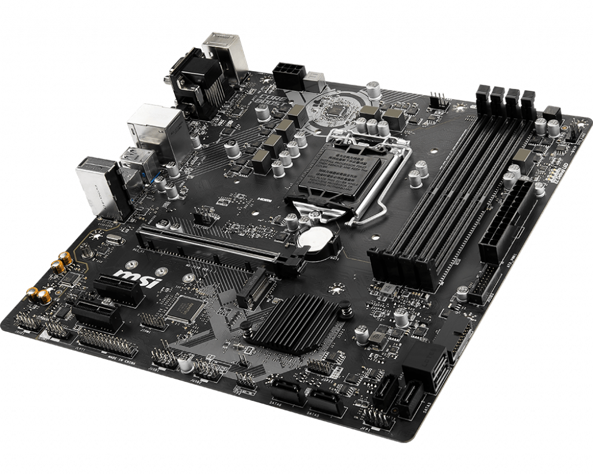

| Anakart |
| Anakart nedir? |
Bilgisayar başta olmak üzere birçok elektronik cihazlarda(cep telefonu, televizyon vs..) bulunan, donanımların
donanımların bir araya toplanmasını ve bu donanımların birbirleri ile haberleşerek koordineli bir şekilde çalışmasını sağlayan parçaya anakart denir.
|
| Anakart ne işe yarar? |
Anakart, güç sağlar ve güç dağıtımını yapar.
Bios sayesinde işlemleri yürütür.
Diğer bileşenlerle iletişim kurar.
Veri akışını sağlar.
Bilgisayarın performansını belirler.
Bileşenler arasındaki uyum sayesinde maksimum performans sağlar.
|
| Anakartlar nasıl geliştirildi? |
1981 yılında IBM, kişisel bilgisayar anlamına gelen "Personal Computer" adlı bir bilgisayar türünü piyasaya sürünce
bu durum değişti. Günümüzde masaüstü ve dizüstü bilgisayarlar için PC kısaltması da buradan geliyor. Bu bilgisayarın işlemlerin kontrolünü sağlaması ve düzenlenmesi için
bir şeye ihtiyacı vardı. Bunun üzerine IBM, ilk anakartı geliştirdi.
|
| Anakart neye göre seçilir? |
Anakart, önceleri yalnızca intel içerisinde değişkenlik gösteriyordu. Soket tipi vs. ancak AMD'nin piyasaya girişi ile
AMD ve INTEL soket olarak ayrıldılar. Anakartın soket tipi ve ram türüne göre seçilir. DDR2 ve DDR3 ram türleri çeşitli işlemci soketlerini destekler. Bunların işlemci ve raminiz
ile uyumunuza göre değişir. Aynı zamanda kasa anakart uyumu da göz önünde bulundurulmalıdır.
|
| Anakartın görevi ve işlevleri nelerdir? |
Anakartın birincil görevi tüm harici ve dahili bağlantıları bilgisayara takılı farklı donanım ve çevre birimlerinde anakart
işlemcileri olarak da bilinen yonga seti işlemcileri aracılığıyla tek bir yerde toplamak ve bu parçaların uyum içinde birlikte çalışmasını sağlamaktır. Bunun nedeni donanım ve
işlevsel parçaların birbirleriyle doğrudan iletişim kuramamasıdır. Örneğin sabit diskte işlenen bir veri işlemci tarafından işlendiğinde veya işlemci üzerindeki veriler bir ekranda
veya ses kartında işlendiğinde kısaca ses veya videoya dönüştürüldüğünde bunlar sayesinde veri aktarımı yapılır. Anakart üzerinde bulunan bu entegre sistemler sayesinde veri aktarımı yapılmaktadır.
|